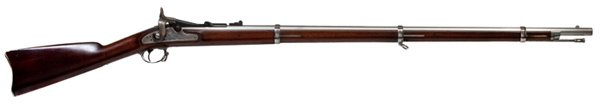

The misfortune of the Indians has been to come into contact with the most civilized and, I may add, the most avaricious people on the earth.
~ Alexis de Tocqueville
Can you imagine the desperation of Big Foot when the Seventh Cavalry found them and huddled them there? The children clinging to the women? The rolling up of those guns? The shouted commands? The dangerous, defiant looks of the young men?
Can you imagine the moment of the blast? Pregnant women shot right through?
Can you believe that they left Big Foot, chief of the Miniconjou, son of Lone Horn, dead in the snow for days?

The Lakota first met the whites in 1804, when Lewis and Clark led a party of them into camp that September. The whites gave the Lakota medals with the picture of the President on them. They explained that the President was their “great father” to the east, and that he owned all these lands. The Lakota were confused. The two men explained that the great father had purchased their lands from the French.
There were buffalo to the horizon when Red Cloud was born. The Lakota then were a proud and powerful people. A warrior tribe of nomadic hunters, of horse-masters, they wandered freely, establishing moveable villages with their tipis.
It was an organic life, determined by the seasons. In the summer, they met with the six other tribes of their nation. Together, these tribes formed the Oceti Sakowin, the Seven Council Fires, and they engaged in the sun dance, the most sacred of their seven traditions. And that was the way of the world. The Crows were their enemies; the Cheyennes were their friends. Wakan Tanka governed all.
There were buffalo to beyond the horizon when Sitting Bull was born.
Though we know them as the Sioux, they are not the Sioux. [“Sioux” is what the French called them after hearing the Chippewa, their enemies to the east, refer to them as the Nadowesioux, or little snakes.] They are the seven tribes of the Oceti Sakowin, “the Seven Council Fires.”
The Lakota are the westernmost of the Oceti Sakowin. Together with the Yanktons, Yanktonais, Sissetons, Mdewakantons, Wahpetons, and Wahpekutes, they form a great nation united in the shared language of Lakota or, in the dialect of the central and eastern tribes, Nakota and Dakota.
Lakota means “allies.”
The Lakota are divided into seven bands: the Sihisapas, the Miniconjous, the Hunkpapas, the Sans Arcs, the Brulés, the Two Kettles, and the Oglalas.
Big Foot was a Miniconjou.
Red Cloud and Crazy Horse were Oglalas.
Sitting Bull was a Hunkpapa.
It was 1849, but the Lakota didn’t know that. They didn’t measure time that way. Nor did they know of California and the irresistible pull of its gold. What they did know was that, suddenly, there were many whites in their lands. Disturbing the buffalo. Bringing disease.
The whites’ travel through their lands was disrupting things. In addition to deaths caused by cholera, measles, and the other diseases that they carried, the presence of the whites was upsetting the buffalo. The Lakota could not tolerate this. They began to get restless. To keep them from getting hostile, the whites called a big meeting.
For two weeks, the whites entertained thousands of American Indians at the mouth of the Horse Creek in Wyoming. They gave them food, weapons, and utensils. They also passed around a paper and asked that it be signed. The Indians, who couldn’t read, trusted the whites and “touched the pen.” By this, they understood that they would be given annual payments of money in exchange for removing themselves to a big land where the whites would let them be.
After the council at Horse Creek, there was a time of peace - until, like in 1849, the whites once again found gold. This time it was in Montana. John Bozeman blazed a trail to get there. This trail went through prime buffalo hunting ground.
The Lakota started bothering the whites, who built forts to protect the trail. Red Cloud emerged. He said, dismantle the forts and abandon the trail.
The whites didn’t listen.
Red Cloud went to war.

Red Cloud and his warriors harassed the forts mercilessly. This annoyed Captain William Fetterman, who boasted, “[w]ith 80 men, I could ride through the whole Sioux Nation.” [But see.] On December 21, 1866, Captain Fetterman rode out of Fort Kearney with 80 men.
Red Cloud's warriors killed them all.
Despite the Lakota’s victory in the Fetterman Fight, they were to struggle against certain disadvantages that they were never able to overcome. One of these was technological.
In the summer of 1867, for example, Red Cloud attacked a party of 32 soldiers just outside of Fort Kearney. Having a much larger force, Red Cloud’s victory should have been swift. Instead, the soldiers huddled in a wagon box and repelled Red Cloud’s initial charge. Expecting that the defenders would need time to reload, Red Cloud sent in another assault. Impossibly, these attackers were also mowed down.
Red Cloud didn’t know that the garrison at Fort Kearney had recently been issued new breech-loading Springfield rifles, which greatly diminished reloading times.

Red Cloud ordered repeated attacks and each one was successfully turned aside. Baffled, Red Cloud eventually withdrew.
But he kept harassing the forts.
Aside from being outmatched technologically, the Lakota faced many other hurdles. Perhaps most importantly, they were outnumbered. They also were hampered in their field movements by having to worry about the weak and the elderly.
Finally, they didn’t understand the whites’ way of war. What Robert Utley described as the "unremitting" nature of it. There was a type of balance to their endless struggle with their traditional enemies like the Crows. These enemies fought for honor, for disputed territory, for reprisal. They fought with a sense of proportion. Neither side was intent upon the other’s utter annihilation.
Fighting Red Cloud was costly. Also, it was slowing the progress of the railroad which, in the period of reconstruction following the Civil War, the country desperately wanted to complete. So, the whites approached Red Cloud and said, let us build the railroad and we will abandon the forts along the Bozeman Trail. In fact, we will set aside the Black Hills, which are sacred to you, for the “absolute and undisturbed use” of the Lakota.
The Lakota agreed.
The railroad was completed in 1869.
The Fort Laramie Treaty of 1868, excerpts
Article I
From this day forward all war between the parties to this agreement shall for ever ceas
Article II
The United States agrees that the following district of country … is set apart for the absolute and undisturbed use and occupation of the Indians herein named.


Shortly after signing the 1868 treaty, Red Cloud was invited to Washington and New York. He was amazed by the magnitude of these cities. “Now we are melting like snow on the hillside,” he said, “while you are growing like spring grass.”
Half convinced and half compelled, the Indians move away to dwell in new deserts where the whites will not allow them to live ten years in peace. Thus it is that Americans acquired for next to nothing whole provinces the richest monarchs of Europe could not afford to buy.
~ Alexis de Tocqueville
Under the terms of the 1868 treaty, General George Armstrong Custer shouldn’t have gone snooping around the Lakota’s Black Hills looking for gold, but he did anyway. In 1874, he found it. He wrote letters east encouraging white expansion into the Hills and, in violation of the treaty, whites once again swarmed the Lakota’s land.
The next year, the Commissioner of Indian Affairs commented in his annual report on “the utter impracticality of keeping Americans out of a country where gold is known to exist by any fear of orders or of United States cavalry, or by any consideration of the rights of others.”
In November 1875, General Philip Sheridan met with President Grant to discuss the problem of the Lakota's ownership of gold-rich Black Hills. Here’s how I imagine that conversation going: Sheridan sat down with Grant and said, look, I know we told those savages that they could have the Black Hills, but that was before we knew that there was gold there. Surely, you don’t expect us to hold to that promise?
Grant probably leaned back and turned to an advisor and said, what do you think? You’ve read the treaty. Is there any way around it?
And the advisor said, the treaty’s pretty clear, Mr. President. It guarantees the Black Hills to those Indians. We've tried to get them to amend it, but Article XII stipulates that the treaty can’t be amended “unless executed and signed by at least three-fourths of all the adult male Indians,” and we’ve only got 10% of them to sign.
And then Sheridan said, look here, Ulysses: that damned treaty’s put the Army in an impossible position. Those flowery letters of Custer's have re-kindled gold fever in the country. Our people want those hills. Do you really expect us to keep arresting people for entering land that should be there’s anyway? And why? Because we made a deal with a bunch of heathens who couldn’t even read the paper they “signed”? That’s ridiculous.
Okay then, said Grant, stop arresting them. Let them through. We won’t break the treaty, we just won’t enforce it. The Indians will be forced to attack. When they do, we’ll treat it as an act of war.
In the summer of 1876, Custer, who the Lakota referred to as “Long Hair,” led the 7th Cavalry out of Fort Abraham Lincoln in search of Indians to force onto a reservation outside of the Black Hills. On June 25, he found a village camped by the Little Big Horn River and attacked it. A numerically superior force of Lakotas, Cheyennes, and Arapahos under the leadership of Sitting Bull and Crazy Horse countered. The outnumbered soldiers panicked. Before long, a Lakota woman named Julia Face recalled, “the Indians acted just like they were driving buffalo to a good place where they could be easily slaughtered.” Custer and his entire command of over 200 men were killed.
After the battle, two Cheyenne women found Long Hair’s body and drove sticks through his ears. Kate Bighead, a Cheyenne woman who witnessed the battle, said, “this was done to improve his hearing, as it seemed he had not heard what our chiefs in the South had said when he smoked the pipe with them. They told him then that if ever afterward he should break that peace promise and should fight the Cheyennes, the Everywhere Spirit surely would cause him to be killed.”
"Kill every buffalo you can. Every buffalo dead is an Indian gone."~ Colonel Richard Irving Dodge, circa 1867
In 1831, when Sitting Bull was born, there were as many as 30 million buffalo roaming those plains.
Passengers shooting from train windows
could hardly miss, they were
that many.Afterward the carcasses
stank unbelievably, and sang with flies, ribboned
with slopes of white fat,
black ropes of blood—hellhunks
in the prairie heat.By 1883, the whites had driven the buffalo, upon which the Lakota relied for food, to virtual extinction.

Whatever we do, wherever we go, we are expected to say yes! yes! yes! yes!—and when we don't agree at once to what you ask of us in council, you always say, You won't get anything to eat! You won't get anything to eat!
~ Standing Elk
When we first made our treaties with the government, this was our position: Our old life and our customs were about to end; the game upon which we lived was disappearing; the whites were closing around us, and nothing remained for us to do but to adopt their ways and have the same rights with them if we wished to save ourselves.
~ Red Cloud
In 1877, the United States presented the Lakota with a new treaty that divested them of ownership of the Black Hills in exchange for food and support from the federal government. Only ten percent of the Lakota, including Red Cloud, signed this treaty. Thus, it was legally unenforceable since Article XII of the treaty of 1868 stipulated that a new treaty could not be enforced “unless executed and signed by at least three-fourths of all the adult male Indians.”
Nonetheless, the Lakota were forced from the Black Hills.
Can you blame Red Cloud for signing the treaty of 1877? Without the buffalo, the Lakota were going to starve. The whites said they would give them rations. Teach them how to farm. The Lakota didn’t want to learn how to farm. They were hunters. But Red Cloud saw the inevitable. He had been to Washington. He had been to New York. He had seen the numbers of the white men. He had seen their technology. He knew that the Lakota could not win this fight. And so, he signed the treaty and surrendered the Black Hills. It was not for nothing. He was not a traitor. He got what he could. Who can blame him?
They gave us meat, but they took away our liberty.
~ Sitting Bull
Can you blame Sitting Bull for not signing the treaty of 1877? Can you blame him for fighting long, for refusing to join the reservations? He didn’t want to be re-educated. He didn’t want to be rooted. He said: “The life of white men is slavery. They are prisoners in towns or farms. The life my people want is a life of freedom. I have seen nothing that a white man has, houses or railways or clothing or food, that is as good as the right to move in the open country.”
Performed by Grant Weston.
"We must kill the Indian and save the man."
~ Richard Henry Pratt, Educator of Lakota Children
"I want to say…that you are not a great chief of this country, that you have no following, no power, no control, and no right to any control. You are on an Indian reservation merely at the sufferance of the government. You are fed by the government, clothed by the government, your children are educated by the government, and all you have and are today is because of the government. If it were not for the government you would be freezing and starving today in the mountains."
~ Illinois Senator John Logan addressing Chief Sitting Bull following his agreement to live on a reservation
"Now, you tell us to work for a living, but the Great Spirit did not make us to work, but to live by hunting. You white men can work if you want to. We do not interfere with you, and again you say why do you not become civilized? We do not want your civilization! We would live as our fathers did, and their fathers before them."
~ Crazy Horse
You Will:
- speak English
- celebrate Christ
- cut off your braids and wear western-style dress
- farm
- own private land
- live in cabins
- remain on the reservation
- become “civilized”

You Will Not:
- speak Lakota
- celebrate the Sun Dance
- look like a Lakota
- hunt
- have communal land
- live in tipis
- roam free
- be a Lakota
You ask us who owns the land? We say that’s a ridiculous question. The land is part of the whole. It is the land, and we are the people of the land, and these are the buffalo, and these are the eagles, and these are the waters, and these, the rocks, and that the sun and the air and the snow and the grass, and each thing fits in its place in the organic tapestry that is the community of the earth.
No. All this business of sharing things, this overly-developed sense of tribal community that you people have, it must stop. It’s frustrating your assimilation. We believe in private property. In ownership. And so shall you. There is no more “tribal land”; there is land that is yours, and land that is not yours. Thus, the reservation will be divided. Each family will given 160 acres, which that family will work. Beyond those acres, you own nothing. This legislation will be “a mighty pulverizing engine for breaking up the tribal mass.” Also, after these allotments, there will be a good deal of reservation land left over. That land now belongs to us.
The Lakota, of course, have never lost hope, and they’ve never given up. But that period following the passage of the Dawes Act, when the buffalo were gone, the Lakota way of life was being dismantled, what little land they had left was being halved, and even Sitting Bull himself had come south to surrender onto the reservations, must have been among the saddest and most unendurable in all of the history of this country’s indigenous peoples.
During this desperate time, word began to spread about a Pauite Indian named Wovoka who preached a new religion known as the Ghost Dance. Many Lakotas, including Big Foot, latched on to the Ghost Dance as a way to restore the tribe to its past glory. Other Lakotas, like Red Cloud, predicted that open celebration of the Ghost Dance would upset the whites, who were trying to make the Lakotas conform to western society. Still others, like Sitting Bull, supported the Ghost Dance but did not participate.
As Red Cloud feared, the whites became nervous that the Ghost Dance would lead to an uprising among the Oceti Sakowin. Thinking that Sitting Bull was encouraging the practice, they issued a warrant for his arrest. During the execution of that warrant, Sitting Bull was killed. Fearing further violence, Miniconjou Chief Big Foot led his followers south from Sitting Bull’s Standing Rock reservation to Pine Ridge, where he hoped to find protection with Red Cloud. On December 29, 1890, the 7th Cavalry intercepted them at a creek called Wounded Knee.
The Government of the United States desires peace, and its honor is hereby pledged to keep it.
~ The Fort Laramie Treaty of 1868, Article I
When the firing began, of course the people who were standing immediately around the young man who fired the first shot were killed right together, and then they turned their guns, Hotchkiss guns, etc., upon the women who were in the lodge standing there under a flag of truce.
Right near the flag of truce a mother was shot down with her infant; the child not knowing that its mother was dead was still nursing, and that especially was a very sad sight. The women as they were fleeing with their babes were killed together, shot right through, and the women who were very heavy with child were also killed ... [A]fter most all of them had been killed a cry was made that all those who were not killed or wounded should come forth and they would be safe. Little boys who were not wounded came out of their places of refuge, and as soon as they came in sight a number of soldiers surrounded them and butchered them there.
Of course we all feel very sad about this affair. I stood very loyal to the government all through those troublesome days, and believing so much in the government and being so loyal to it, my disappointment was very strong, and I have come to Washington with a great blame on my heart. Of course it would have been all right if only the men were killed; we would feel almost grateful for it. But the fact of the killing of the women, and more especially the killing of the young boys and girls who are to go to make up the future strength of the Indian people, is the saddest part of the whole affair and we feel it very sorely.
~ American Horse testifying to the Commissioner of Indian Affairs in Washington on February 11, 1891
“These brave men and the Hotchkiss guns that Big Foot's Indians thought were toys, Together with the fighting 7th what's left of Gen. Custer's boys, Sent 200 Indians to that Heaven which the ghost dancer enjoys. This checked the Indian noise, and Gen. Miles with staff Returned to Illinois.”
The Revolving Cannon is a compound machine-gun, in which it has been sought to combine the advantages of long-range shell fire, with the rapidity and action of the mitrailleuse, to produce therefore the powerful effects of artillery fire with a gun having no recoil and other valuable factors of the mitrailleuse.
The gun consists of five barrels, grouped around a common axis, which are revolved around a solid immovable breech-block. This has in one part an opening to introduce the cartridges, and another opening through which to extract the empty shells, whilst the cartridges are discharged singly … The turning of a crank causes the automatic loading, firing, and extraction of the empty cartridge-cases, all these operations being performed continuously during the movement of the crank.
This machine-gun has, besides its great accuracy and range, the peculiar and valuable advantage of firing explosive shells, producing the greatest moral and physical damage to the enemy, and enabling at the same time to rectify its fire by observing the explosions of falling projectiles.
~ from The Hotchkiss Revolving Cannon, Alfred Koerner, 1879